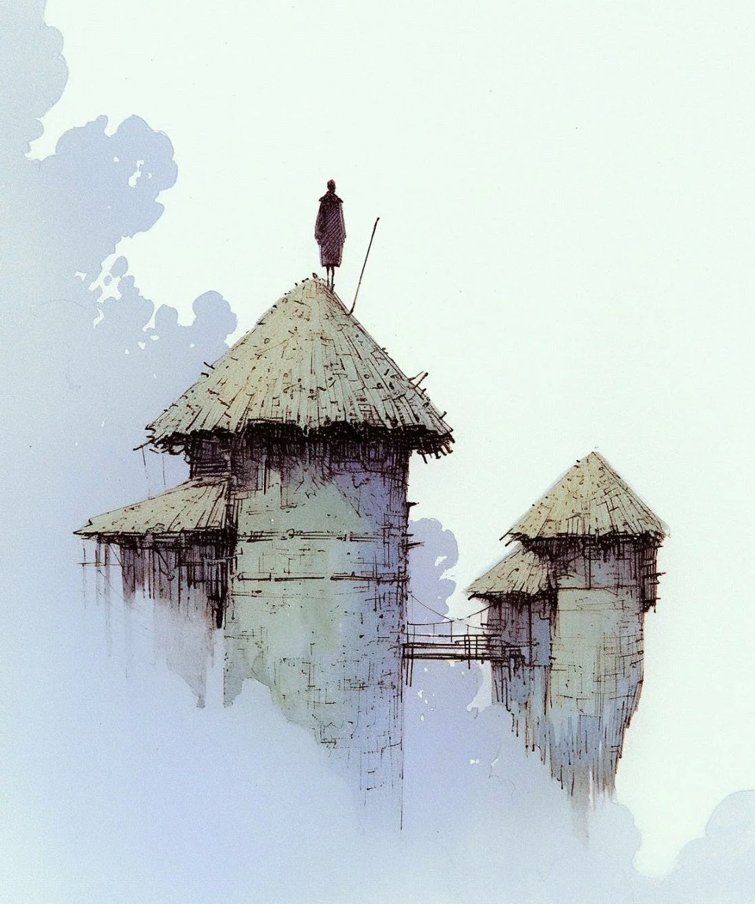

님버스 베일의 고대 망루들은 풍화된 파수꾼처럼 서 있었고, 짚으로 엮은 그 꼭대기는 영원한 안개를 꿰뚫고 있었다.
[The ancient watchtowers of Nimbus Vale stood like weathered sentinels, their thatched peaks piercing the eternal mist.]
매일 아침, 나는 삐걱거리는 다리를 건너 늘 가던 길을 따랐다. 대나무 지팡이로 헐거워진 널빤지를 확인하고, 다음 폭풍 시즌이 오기 전에 교체해야 할 것들을 표시해 두었다.
[Each morning, I traced the same path across that creaking bridge, my bamboo staff testing loose planks, marking those that would need replacing before the next storm season.]
망루들은 단순한 건물이 아니라 악기였다. 그 텅 빈 방과 정교하게 배치된 창문들은 바람이 통과할 때 복잡한 화음을 만들어냈다.
[The towers weren’t just buildings – they were instruments. Their hollow chambers and carefully positioned windows created complex harmonies when the wind passed through them.]
옛 스승들의 가르침에 따르면, 이 노래들은 저지대 전반의 날씨를 안정적으로 유지했다. 망루의 음악이 없다면, 농작물은 시들고 계절의 섬세한 균형은 무너져 내릴 것이었다.
[These songs, as the old masters taught, kept the weather patterns stable across the lowlands. Without the towers’ music, crops would wither, and the delicate balance of seasons would collapse.]
일하는 동안 축축한 습기를 머금어 무거워진 옷자락이 다리에 휘감겼다. 15년간의 임무는 그 흔적을 남겼다. 굳은살이 박인 손, 다른 이들이 책을 읽듯 구름의 모양을 읽어내는 눈, 그리고 이 건축물들이 내는 모든 삐걱거림과 신음 소리에 대한 속속들이 꿰뚫는 지식 같은 것들을.
[My robe, heavy with collected moisture, clung to my legs as I worked. Fifteen years of service had left their mark – callused hands, eyes that could read cloud formations like others read books, and an intimate knowledge of every creak and groan these structures made.]
이전 세대의 지기들에게 그랬듯, 망루들은 내게 말을 걸어왔다.
[The towers spoke to me, as they had spoken to generations of keepers before.]
오늘은 무언가 달랐다. 동쪽 망루의 기도 구멍을 지나는 평소의 바람 소리 음조가 달라져 있었다. 무언가 막혔거나, 어쩌면 더 나쁘게는 구조적 손상일지도 모른다. 조사를 위해 꼭대기까지 올라가야만 했다.
[Today, something was different. The usual whistle of wind through the eastern tower’s prayer holes had changed pitch. A blockage, perhaps, or worse – structural damage. I’d need to climb to the summit to investigate.]
오르는 과정은 정해진 순서대로였고, 한 걸음 한 걸음이 명상과 같았다. 내 손가락은 오래된 나무의 익숙한 손잡이를 찾아 짚었고, 비에 나뭇결이 연해진 곳은 피했다. 높이 오를수록 공기는 희박해졌고, 마침내 구름이 나와 함께 숨을 쉬는 것만 같았다.
[The ascent was methodical, each step a meditation. My fingers found familiar handholds in the aged wood, avoiding the spots where rain had softened the grain. The higher I climbed, the thinner the air became, until the clouds themselves seemed to breathe with me.]
꼭대기 근처에서 문제를 발견했다. 바로 핵심적인 공명실 중 하나에 구름 제비 한 가족이 둥지를 튼 것이었다.
[Near the top, I found the problem – a family of cloud swallows had built their nest in one of the crucial resonance chambers.]
녀석들의 은빛 깃털은 아침 서리처럼 빛났고, 눈은 우리를 둘러싼 안개와 똑같은 진줏빛 광택을 머금고 있었다. 고서에 따르면, 이 새들은 한때 하늘 신들의 전령이었다고 한다.
[Their silvery feathers gleamed like morning frost, and their eyes held the same pearlescent sheen as the mists that surrounded us. According to the ancient texts, these birds were once messengers of the sky gods.]
규율상 어떤 장애물이든 즉시 제거해야 했다. 그 원인이 아무리 아름답다 한들, 망루의 노래가 훼손될 수는 없었다. 하지만 둥지를 향해 손을 뻗는 순간, 어미 새가 나를 멈칫하게 만드는 강렬한 눈빛으로 시선을 마주해왔다.
[Protocol demanded immediate removal of any obstruction. The towers’ song couldn’t be compromised, no matter how beautiful the cause. But as I reached toward the nest, the mother bird met my gaze with an intensity that made me pause.]
그 순간, 나는 어쩌면 나의 선대들이 잊었을지도 모를 무언가를 깨달았다. 망루는 단순히 통제를 위한 도구가 아니라, 세계와 세계를 잇는 다리라는 사실을.
[In that moment, I understood something my predecessors had perhaps forgotten – the towers weren’t just instruments of control, but bridges between worlds.]
둥지를 제거하는 대신, 나는 이후 세 시간 동안 원래의 것보다 두 피트 위에 새로운 공명실을 정성껏 팠다.
[Instead of removing the nest, I spent the next three hours carefully carving a new resonance chamber two feet above the old one.]
나무는 질겼고 내 연장은 그 일을 하기에 턱없이 부족했지만, 해 질 녘에 망루의 노래는 돌아왔다. 이제 그 노래는 제비의 집 주위를 흐르는 바람이 만들어내는 미묘하고 새로운 화음으로 더욱 풍성해져 있었다.
[The wood was stubborn, my tools barely adequate for the task, but by sunset, the tower’s song had returned, now enriched with a subtle new harmony created by the wind flowing around the swallows’ home.]
나의 스승들은 이를 이단이라 불렀을 것이다. 망루는 변하지 않은 채로 있어야 한다고, 그들은 말하리라. 하지만 꼭대기에 서서 태양이 호박색과 장밋빛으로 구름을 물들이는 것을 바라보며 나는 깨달았다. 어쩌면 가장 진정한 보존이란 완고한 완벽함을 유지하는 것이 아니라, 이 고대의 구조물들이 진화하고, 숨 쉬고, 살아 숨 쉬게 두는 것일지도 모른다는 것을.
[My teachers would have called it heresy. The towers were meant to remain unchanged, they’d say. But as I stood on the summit, watching the sun paint the clouds in shades of amber and rose, I realized that perhaps the truest form of preservation wasn’t in maintaining rigid perfection, but in allowing these ancient structures to evolve, to breathe, to live.]
서쪽 망루의 내 거처로 돌아가는 동안 발밑의 연결 다리가 삐걱거렸다. 내일, 나는 지기의 일지에 이 변경 사항을 기록하기 시작할 것이다. 전통으로부터의 이탈이 아니라, 그것의 자연스러운 연속으로 말이다.
[The connecting bridge creaked beneath my feet as I made my way back to my quarters in the western tower. Tomorrow, I would begin documenting this modification in my keeper’s journal – not as a deviation from tradition, but as its natural continuation.]
애초에, 모든 살아있는 것들 사이의 섬세한 균형을 유지하기 위함이 아니라면, 우리가 이 망루를 보존하는 이유가 무엇이겠는가?
[After all, what were we preserving these towers for, if not to maintain the delicate balance between all living things?]
내 머리 위로, 제비들이 저녁 공기를 가르며 쏜살같이 날아다녔고, 그 날갯짓은 안갯속에 은빛 호를 그렸다.
[Above me, the swallows darted through the evening air, their wings cutting silver arcs through the mist.]